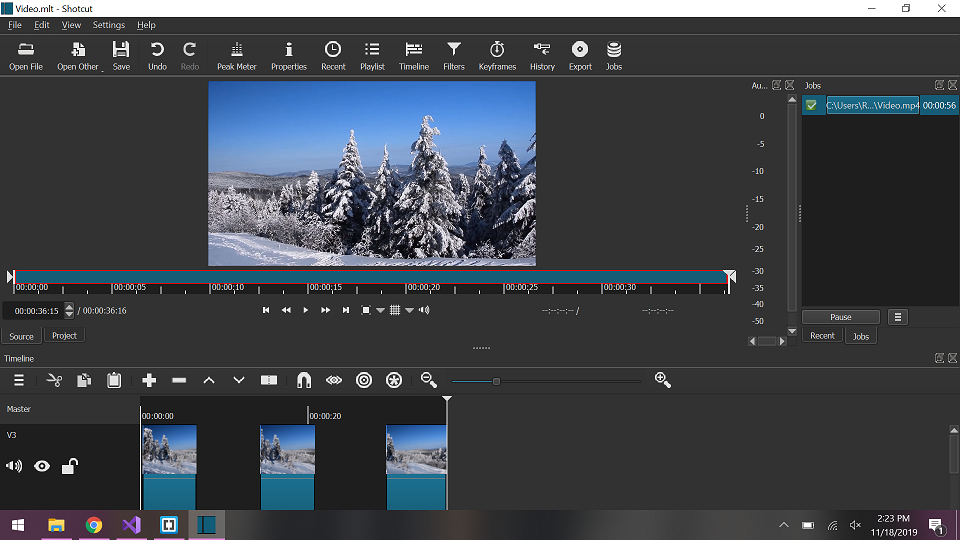

I was feeling the winter season so I decided to create a video where it shows scenes of nature during the winter. I decided to combine a scenery of a forest and deers during the winter. I also like watching nature scenes so I decided to go with it.

Sources: